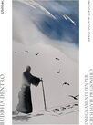
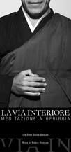
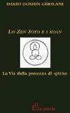

Lo Zen Soto e i Koan
aaa
Approfondisci →Il nostro intendimento del Buddhismo non è meramente intellettuale. Il retto intendimento è la pratica effettiva stessa.Shunryu Suzuki Roshi

23-24 Giugno, COSTRUIRE LA FRATERNITA' ATTRAVERSO IL DIALOGO E LA COLLABORAZIONE, Buddhisti, Cristiani, Indù, Giainisti e Sikh in Europa - Pontificia Università S. Tommaso d'Aquino (Angelicum)
dettagli
Giovedì 7 maggio, dalle 18.00 alle 20.00, presentazione del libro
Buddha dentro - Insegnamenti Zen per chi si sente prigioniero
di Dario Doshin Girolami, presso la Facoltà di Medicina e Psicologia della Sapienza

Mente di principiante
Corso di Meditazione in modalità telematica con Dario Doshin Girolami
ogni mercoledì, ore 20.00

Documentario "La Via Interiore - Meditazione a Rebibbia".
E' on line l'intero documentario sul corso di meditazione in carcere condotto da Dario Doshin Girolami.

Lo Zen Soto e i Koan
E' stato pubblicato il libro di Dario Doshin Girolami
Lo Zen Soto e i Koan - La Via della Presenza di Spirito.